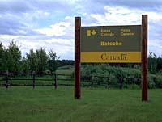
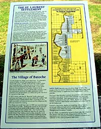
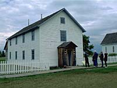
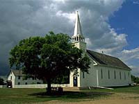

Community of Batoche
Village of Batoche
Northwest Rebellion
Battle of Batoche
Gabriel Dumont

|
|
"Environmentally Sensitive Area". Please be careful where you walk and try not to disturb the natural environment. For additional information please contact Tourism Saskatchewan. | ||
| Batoche National Historic Site | |||
| GPS: | 52d 45.51m N | 106d 07.80m W | 1444 feet |
| Location: | The following images and the two QTVR files were shot in the original Batoche site (18 kms east of Rosthern on #312 and about 7 kms north), which was part of the St. Laurent Settlement. | ||
 In the spring of 1885, the Northwest Territories exploded in an armed uprising. The situation did not develop overnight, rather it resulted from the federal government's inaction to the long standing grievances of those living on the frontier. Batoche National Historic Site relates the history of Metis culture and society, and the events of the Northwest Resistance of 1885. | |||
| Building The Community of Batoche | |||
 The 1870s brought years of change for the Metis. With the buffalo herds diminishing, they began to realize that to survive as a people they had to make greater use of their lands and adapt to the rapidly developing agricultural economy in the west. In 1874, the first group of 300 Metis settled on a 40 kilometre (25 mile) stretch of land extending from St. Laurent to Fish Creek. Here, they laid out their river lot farms and, depending on the season, freighted, hunted, fished and farmed to support their families. In 1884, about 1500 Metis lived in the St. Laurent settlement. | |||
 Most of the buildings in the St. Laurent Settlement were of log construction with dove-tailed corners; the building usually resting on a log sill or fieldstone foundation. The Metis filled the spaces between the logs with mud and hay plaster and whitewashed the exterior. Initially, roofs were thatched but they might be shingled as the owners became more prosperous. | |||
 Some of the more substantial dwellings, like Letendre's and the church and rectory, were built using "Red River Frame Construction." A vertical frame of square timbers with deep grooves cut into them was filled with squared horizontal logs with tenoned ends fitting these grooved mortises. The exteriors were then boarded and painted. Two storey houses were not uncommon and the interiors were comfortably, if sparsely, furnished. | |||